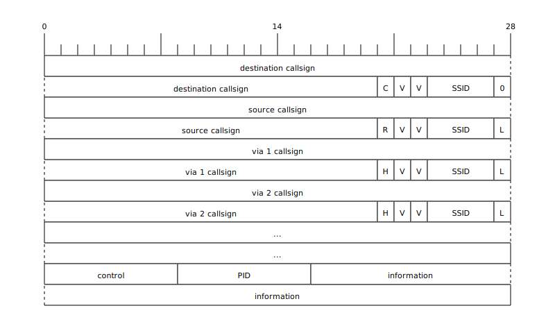

AX.25 is a link-layer protocol used with amateur packet radio. As AX.25 uses encoded amateur radio callsigns for addressing, it meets the requirements for amateur radio transmissions to be easily identified. It is common to use a Terminal Node Controller (TNC) to connect a computer to an AX.25 network.
The KISS TNC protocol provides a framing protocol for use over a serial line to communicate with a TNC to send and receive packets via a radio link.
Frames look like:
The FEND (frame end) at the start and end of the frame signifies the boundaries of the frame. This allows the TNC to know when one frame has finished and another has begun. The first byte of the frame is split into two nibbles (4 bit fields). The first of these indicates the "port" number, for systems with multiple radios attached. The second nibble is a command. The most common command is 0, meaning data. Following this first byte are the bytes of data to be transmitted. The same occurs in the other direction, with the TNC sending data in the same framing to the host.
When a FEND occurs inside the data to be transmitted, it must be escaped in order to not be misinterpreted as the end of a frame. This uses a FESC (frame escape) byte which must also be escaped. The FEND code is then sent as FESC, TFEND (transposed frame end) and the FESC is then sent as FESC, TFESC (transposed frame escape).
See the KISS TNC FAQ Entry for more information on using KISS TNCs with HamBSD.
As a link layer protocol, AX.25 allows for communication between hosts on the same link. In this case, that means those in the same radio channel. A channel will be defined by at least the frequency, mode, directionality, antenna height, antenna gain and power. Unlike some other link layers, not all hosts that are able to communicate with one host will be able to communicate with each other.
AX.25 has support for "source routing" where the sender may specify stations that should forward frames. These forwarders are known as digipeaters (digital repeaters). The original specification allowed up to 8 digipeaters, while later revisions limit this number to 2. It was the intention of the specification authors that once layer 3 (network layer) protocols were deployed that this layer 2 forwarding would no longer be required.
The specification included both a "connected mode" and also a simpler mode for sending datagrams. The connected mode uses a collection of frame types while the datagram mode uses only one type: "Unnumbered Information" (UI) frames.
HamBSD aims to support the use of AX.25 UI frames for use with APRS and TCP/IP. It does not support the use of connected mode AX.25.
A UI frame looks like: 
The first two addresses, destination and source, are mandatory. Then there may be up to 8 "via" addresses. Each address consists of at most a 6 charachter callsign and a secondary station identifier from 0 to 15. The last bit of each address (excluding the destination address) may be set to 1 to indicate the end of the addresses field. If there are no digipeaters specified, this means that the source address will have this bit set (shown as "L" in the above diagram).
Following the addresses there are two fields: control and PID. The control field will always be 0x03 to indicate that this is a UI frame. The PID will be 0xF0 for APRS, 0xCC for TCP/IP or 0xCD for Address Resolution Protocol (ARP, required for TCP/IP).
To learn more about APRS, see the APRS protocol page, or see the APRS FAQ Entry for information on using APRS with HamBSD. To learn more about TCP/IP, see the TCP/IP protocol page.